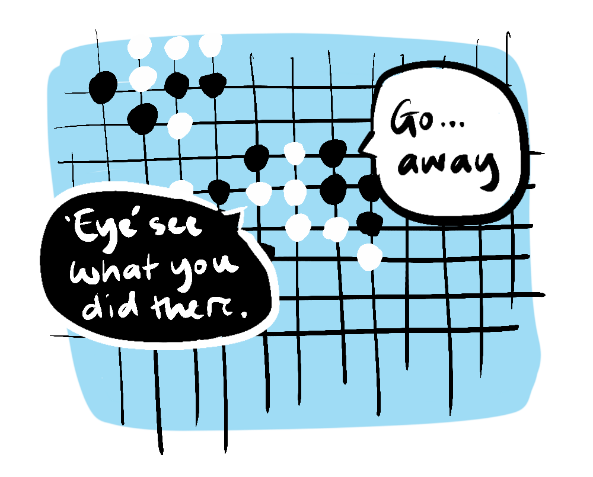
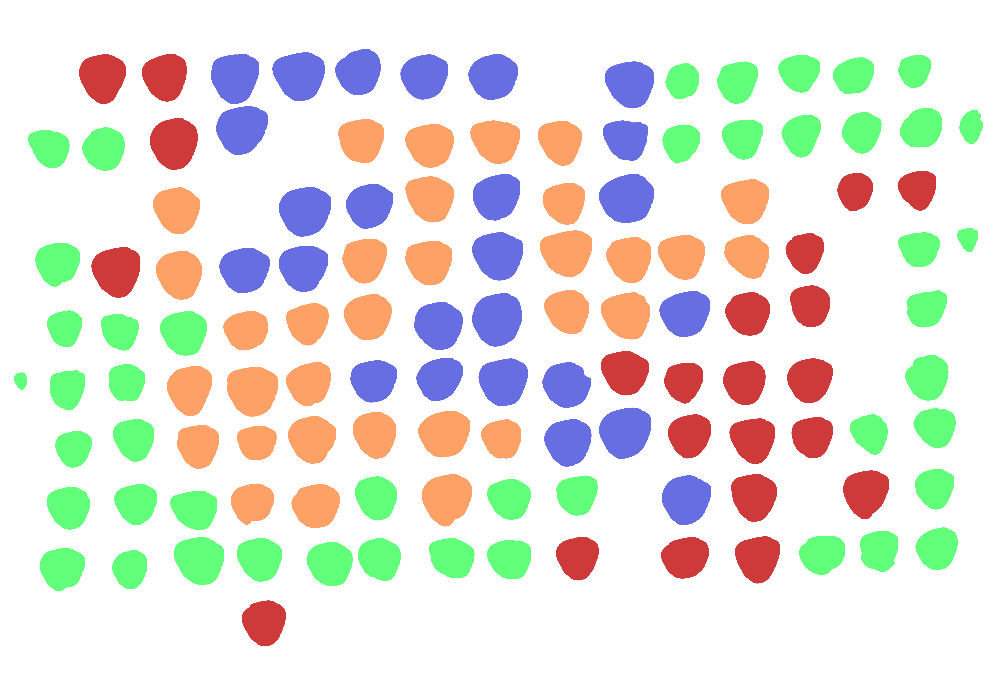

One zero-sum situation that becomes non-zero-sum, in a profound way, is the story of coral•••
A coral polyp is an animal (yep•••) which is born into a life of fierce competition• The polyp, which resembles something right out of 'Stranger Things', uses stinging tentacles to battle other polyps for dominance over territory, like a very mean and nasty game of 'Go'•

Once the polyp has established a base it goes about cloning itself to fill its niche• But this is where the Gigeresque nightmare ends and the Disney-Pixar fairytale begins• In fact, once the polyp colony has been established, it begins building a range of friendly relationships, firstly between the clones themselves which build a unified protective body and share nutrients through a sort of "gastric" system (tap below for an "artist's impression").

Then they get chummy with the ocean fauna, most famously in the example of relationship between a polyp - the sea anemone and the clown fish (Pixar call-back)• And in the end, after initially competing with other polyps, the coral becomes a shelter for its jellyfish brethren (yes, they are also polyps!) who in return provide nitrogen essential for coral health•
In fact the polyp itself is a non-zero system that benefits from a symbiotic relationship with microscopic algae known as zooxanthellae which are what give coral its beautiful colour. These algae contribute to both the coral and the rest us by producing oxygen through photosynthesis• In fact it's estimated that marine photosynthetic organisms produce 50-80% of the world's oxygen•
Tragically, many coral reefs are becoming gray and dying due to pollution, acidification and temperature change• When the reefs lose their vibrant hues, it signifies that these symbiotic organisms are no longer producing oxygen•
What a downer•••
••• as a consolation you can make your very own virtual coral bed here, just have a tap around in this space and watch 'em grow
Our unlikely heroes of the deep are a testament to the transformative power of adopting a non-zero-sum mindset• The polyps' journey from ruthless competitors to intricate contributors in a thriving ecosystem underlines the potential that lies in cooperation and symbiosis•
We are incredibly lucky to benefit from such a confluence of naturally occurring non-zero-sum games and in essence, the philosophy of this site is a call to action to build upon this• Let's challenge ourselves to find the "coral polyps" in our own lives - those opportunities to transform zero-sum scenarios into non-zero-sum games• We might discover that we're not only enhancing our own lives but also contributing to a better world•
Phew, that's better note to end on!
If you want to learn more about polyps or get involved in building actual coral beds, check out Save the Corals Club